:abbrivate缩写:ab o1z oeasyiabcab:ab - 所有的:ab o1z - o1zviewoption中缩写abbreviate 还有个 映射map映射map 什么意思呢？🤔map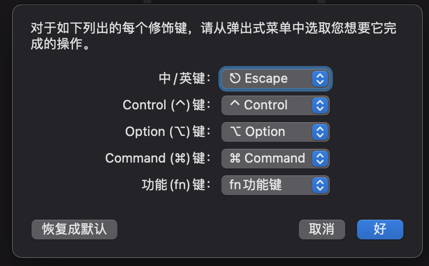
map:map ; :; 映射成 :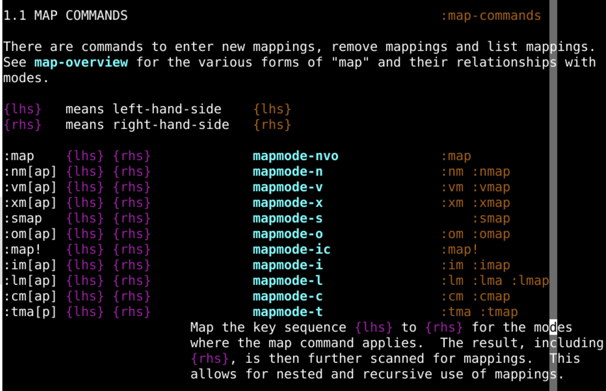
:map Y y$定一个映射map是命令的名字Y 是被映射的键y$ 是映射到的键Y，就相当于y$:reg 观察默认寄存器:map! Y 0y$定一个映射map是命令的名字Y 是被映射的键0y$ 是映射到的键0y$:map 所有模式:vmap 可视化模式 visual:nmap 正常模式 normal:omap operartor-pending 被定义的键可以作为一个motion来使用:map! 插入和命令行模式:imap 插入模式 insert :cmap 命令行模式 command:nmap ; ::h ;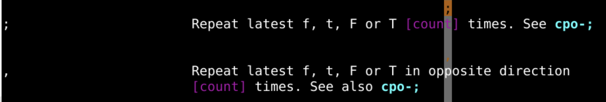
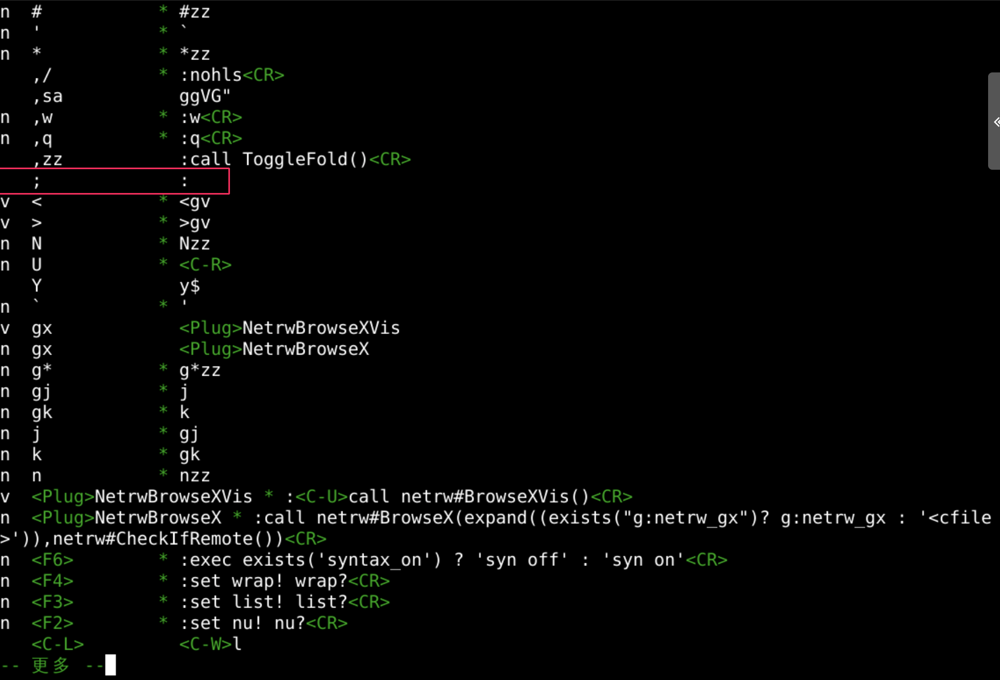
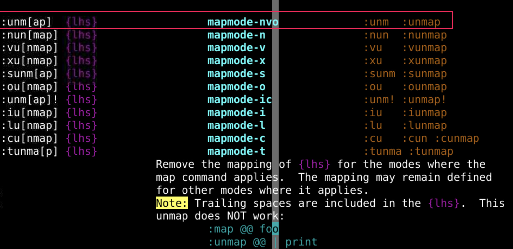
:ab、:una一样:map也有自己的:unmap:unmap ;;到:的映射消失了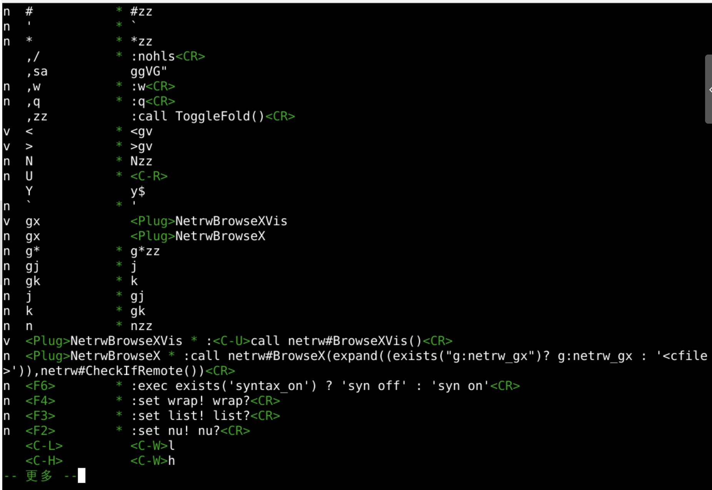
:nmap Y y$:reg ":nmap Y 0y$:reg "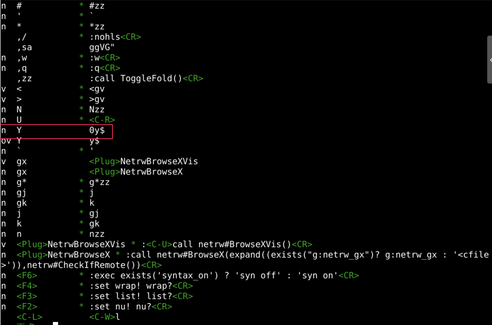
:map可以观察所有已经存在的映射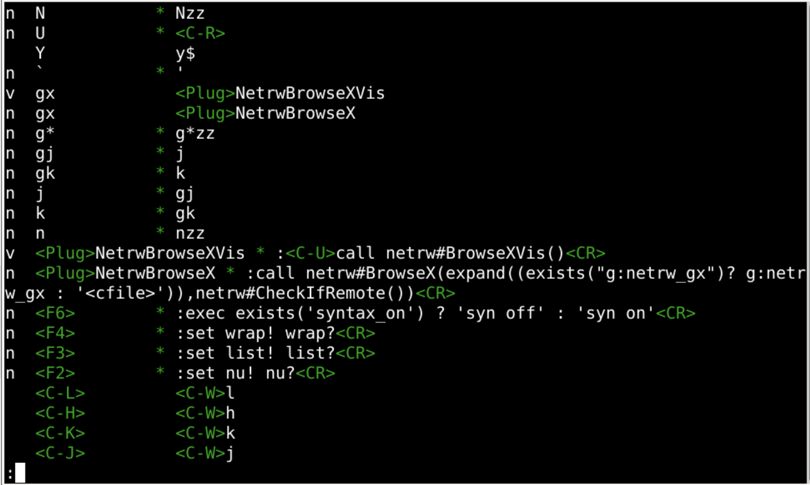
:imap ;:nmap Y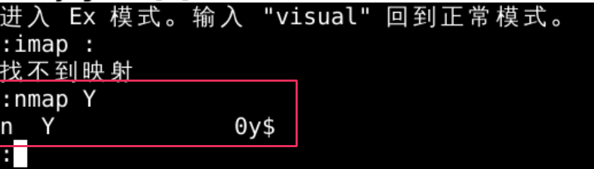
:map <LEFT> <nop>:map <UP> <nop>:map <RIGHT> <nop>:map <DOWN> <nop>:nmap <LEFT> <nop>:nmap <UP> <nop>:nmap <RIGHT> <nop>:nmap <DOWN> <nop>:map <left> <nop>
:set nopaste
:ab sysout System.out.println("");<left><left><left>
:map j k
:map k j
:noremap j k
:noremap k j
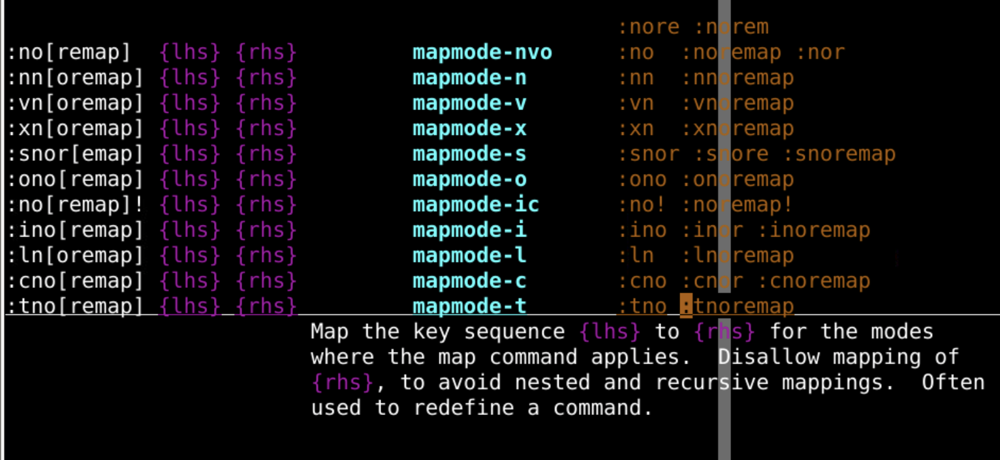
:set nopaste
:ab @a ad
:imap ad adder
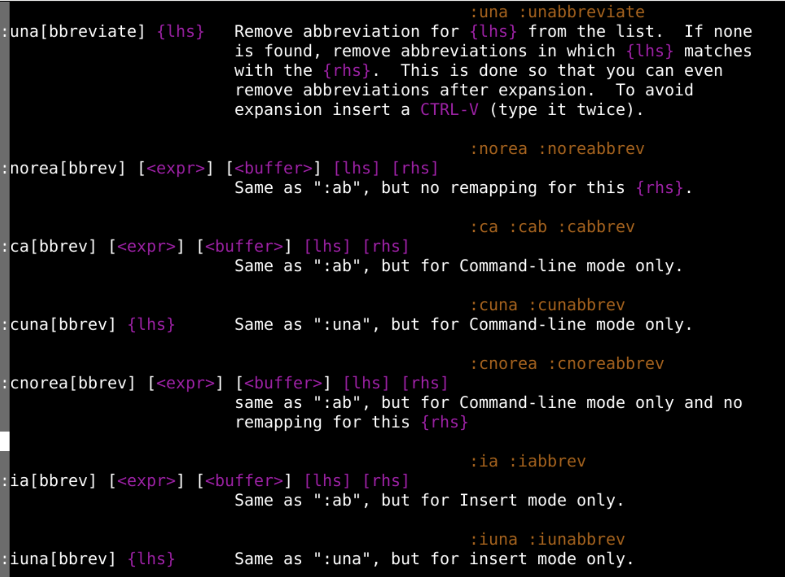
:map aa oeasy:map aaa o2zoeasyo2znoremapnoreabbrev:map映射:map ; ::map:map ;:unmap可以映射到指定的模式
:map 所有模式:vmap 可视化模式 visual:nmap 正常模式 normal:omap operartor-pending 被定义的键可以作为一个motion来使用:map! 插入和命令行模式:imap 插入模式 insert :cmap 命令行模式 command可以映射到什么也不做
:nmap h <nop>:noreabbrev o1z oeasy 缩写 和 映射 都是可以:mkview保存的~/.vimrc作为基础映射filetype 中做一些专门的操作